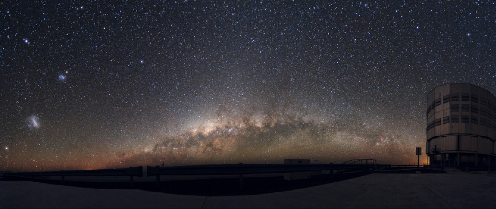

About Me
I am an astrophysics researcher and scientific software developer at INAF Arcetri. My work focuses on adaptive optics instrumentation,
control and calibration pipelines for deformable mirrors, and data-driven methods for stellar system studies.
Education
- Master's Degree in Astronomy and Astrophysics (2024), Sapienza University of Rome
- Bachelor's Degree in Physics (2020), Sapienza University of Rome
Selected Training
- SCIA3 - Scientific Communication in Astronomy (2025)
- GISM3 Doctoral School (2025) - certificate
- AI-PHY Doctoral School (2024) - certificate
- Course in Git, GitLab and CI/CD (2025)
Research Interests
- Adaptive optics systems, deformable mirrors, and optical calibration
- Galaxy and stellar dynamics, with emphasis on data-driven modeling
- Software development for instrumentation testing and scientific analysis
Technical Skills
- Python, Bash, R, C/C++, Linux, Git, LaTeX, Fortran90
- Scientific workflows with local LLMs and agentic tooling
- English C2, Italian native speaker
Research

Current Activity
BINCAT - Binary Catalog for AO Systems Performance Evaluation
Principal Investigator, INAF Fundamental Astrophysics Call 2024
miniGrant awardee
Awarded funding for the development of a catalog of close binary stars (20-200 mas) as a tool for commissioning
and optimizing adaptive optics (AO) systems on large telescopes. The project utilizes GAIA DR3 data to statistically
identify multiplicity indicators and optimize the parameter space through PSF simulations. The catalog will support
both current and next-generation AO instruments (e.g., MAVIS, MORFEO, ANDES).
Optical Qualification of the Test Tower for the ELT's M4 Adaptive Mirror
Software development, debugging, and calibration for the M4 Deformable Mirror and Optical Test Tower within the ESO ELT project.
Activities include alignment controls, optical data production, and calibration analysis on the M4 demonstration prototype.
Petalometer Metrology Bench Integration
Integration and alignment of a segmented mirror metrology test bench combining interferometric and absolute position sensors
for piston, tip, and tilt measurements.
Leadership
INAF Fundamental Astrophysics Grant (2024)
Principal Investigator of BINCAT, a funded miniGrant project for close-binary catalog construction and AO performance support.
Lead Software Developer for ELT M4
Responsible for software architecture, diagnostics, and calibration workflows for deformable mirror commissioning and testing.
Software
OPTICALIB
Python package for optical calibration workflows of deformable mirrors.
M4 Control and Calibration Software
Control and analysis software stack for the ESO ELT M4 mirror and the Optical Test Tower.
GRASP
Globular clusteR Astrometry and Photometry Software.
XuPy
CuPy interface for GPU-accelerated masked arrays.
View all repositories on GitHub
Publications
Status Legend: Published | Preprint | In preparation
In preparation
- Subaperture Calibration of Deformable Mirrors for ELT-era DM size
- Building a catalog of close binary stars through GAIA PSF simulations for ELT era AO systems
- Integration and alignment of the Petalometer testbench at INAF Arcetri
- Optical calibration of the ELT-M4: automated testing procedure and results on the prototype
- Optical calibration of the ELT-M4: validation of local capacitive sensor calibration on the prototype
- Optical calibration of ELT-M4: segment phasing procedure tested on the prototype
- Novel approach to a stitched optical surface reconstruction
- SPECULA: adoption and use cases of a scalable adaptive optics simulation framework
Note: In-preparation entries are active manuscripts and title, author order, and journal target may change before submission.
Talks and Posters
-
SPIE Astronomical Telescopes + Instrumentation 2026 (Copenhagen, 5-10 Jul 2026)
First author posters and co-authored contributions on BINCAT, Petalometer integration, and ELT-M4 calibration.
Event link
-
V ADONI Workshop 2026 (Rome, 21-24 Apr 2026)
Talk on OPTICALIB software for AO deformable mirror calibration.
Event link
-
AO4ELT8 (Vina del Mar, 27-31 Oct 2025)
Poster presentation of the BINCAT project.
Event link
Contact
Email: pietro.ferraiuolo@inaf.it
E-mail Copied
Address: Piazzale Enrico Fermi, 5 - Firenze
Website: pietroferraiuolo.github.io